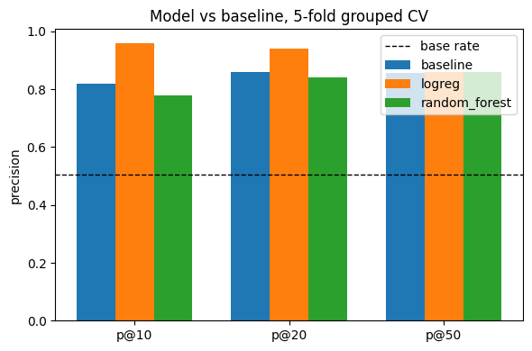
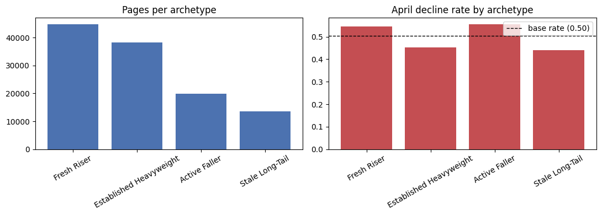

01 — abstract
Using only content and context signals a page carries by the end of March 2026 — before any engagement trend shows up as "down" — can we flag which pages are at elevated risk of an April impression decline? We built March-only features and an April decline label (>20% drop in daily impressions) for 116,539 content items across 40 pseudonymized clients, drawn from the FlyRank ML Internship warehouse's 79-million-row release, and validated with 5-fold cross-validation grouped by client so no model could partly memorize a client's template instead of learning a transferable pattern. We compared a hand-written baseline rule against logistic regression and a Random Forest on the identical split. All three methods clearly separated risk from the panel's 50.4% base rate, but the honest result is more mixed than a single headline number: logistic regression led at the tightest cutoffs, and the Random Forest — the model the earlier project write-up named as the final choice — essentially tied the baseline rather than clearly beating it, a result we report as measured rather than smoothing it into a bigger win. The output is not an automated decision: it is a ranked review queue with four descriptive risk tiers, meant to sit in front of a content strategist with a fixed review budget, alongside explicit limits on what a five-week, single-release pattern can and cannot claim.
02 — introduction
The decision, not just the model
This is a decline-risk classification task: using only content and context attributes that exist independently of a page's engagement trend, can we flag which currently non-declining pages are at elevated risk of falling into decline before it shows up in the numbers?
The decision this supports is narrow and deliberately so. It is whether a page gets added to a content strategist's periodic — roughly monthly — review queue, inside a fixed review budget, ahead of becoming a reactive emergency refresh. It is not a decision about any single page in isolation, and it is not an automated action of any kind.
The cost of a wrong call runs both ways. A false positive burns a limited review slot on a page that was fine. A false negative lets a real decline go unnoticed until it is more expensive to reverse. Both costs are treated as real throughout this paper, which is why the results below are reported as a ranking signal for a human queue, not as a verdict on any one page.
03 — data
Release, tables, windows
- release
- The pseudonymized, safe warehouse release
FlyRank/internship-warehouseon Hugging Face (~79M rows, ~70 clients), read directly off Parquet via DuckDB — never downloaded whole. - tables used
fact_content_daily_performance(partitionsmonth=2026-03andmonth=2026-04) anddim_content(content type, last-updated date).- date windows
- Features come from March 2026 only; the label comes from April 2026 only, with no overlap between the two. March was used as a mid-panel month by design — the release's final month is a sealed test window that was never touched while developing label logic.
Excluded, and why
- GA4-derived columns where tracking wasn't yet active for a client — those are zero-filled before a client's tracking start, so a zero there means "not tracked," not "no engagement."
- The 90-day query table — its fixed window sits close to the release's final months, so it can't be safely aligned to an earlier mid-panel label without a dedicated alignment check we didn't have time to run.
- Raw client, content, and URL hash IDs as model inputs — these are join keys only. Using them as features would mean memorizing an identity, not learning a content pattern.
- No client names, brand names, URLs, or raw queries appear anywhere in this paper or its underlying notebook — every identifier below is the pseudonymous hash the release ships with.
116,539 content items across 40 clients survived a minimum-activity filter (≥15 days of March data, ≥30 March impressions), with a decline base rate of 50.4%.
04 — methodology
Label, features, baseline, validation
- label
is_down= 1 if a page's April daily impressions fell more than 20% versus March, else 0 — built from raw facts, not a column the release ships pre-computed.- features (5 numeric + content-type one-hot, all knowable by 2026-03-31)
- prior-month volume (log daily impressions), average position, click-through rate, within-March momentum (second half vs. first half), and staleness (days since last content update).
- baseline
score = max(0, −momentum) × log1p(daily impressions)— thresholds were fixed before evaluation, not tuned against the metric.- model
- A Random Forest was the model named as the final choice after being compared against logistic regression on identical data. As Section 5 shows, that choice does not hold up cleanly against the honest comparison — we report both.
- validation design
GroupKFold(5)on the pseudonymous client ID. The label is already time-separated at the row level (March features, April label); the remaining leak risk sits across client — pages from the same client share a template and a niche, so a random split would let a model partly memorize a client instead of learning a generalizable pattern. An earlier audit in this project confirmed that risk was real: a naive random split scored measurably higher than the grouped split on the same data.- leakage checks
- No feature name matched a label-derived pattern; no feature correlated with the label above 0.90 (max observed |r| = 0.252); the baseline score rebuilds exactly from March-only columns; no April column reaches the exported review queue.
05 — results
Model vs. baseline, same split
All numbers below come from the same 5-fold, client-grouped cross-validation — mean precision@K across the five held-out folds, with the panel's base rate (0.505 across folds) marked for scale.
| method | p@10 | p@20 | p@50 |
|---|---|---|---|
| baseline (hand-written rule) | 0.820 | 0.860 | 0.856 |
| logistic regression | 0.960 | 0.940 | 0.860 |
| random forest (named final model) | 0.780 | 0.840 | 0.860 |

The chart is easy to over-read as a clean win, so here is the honest version. Every method separates risk from noise by a wide margin — all three sit 30 to 46 points above the coin-flip base rate at every K. That part of the result is solid.
The comparison the methodology promised — Random Forest beating logistic regression as the chosen final model — does not hold in this run. Logistic regression led at the tight, operationally relevant cutoffs (p@10 = 0.96 vs. 0.82 for the baseline and 0.78 for the Random Forest), and at p@50 the Random Forest edged the baseline by 0.004, which is not a result we're willing to call a win. We are reporting this as measured rather than reframing it, in line with the project's own honesty rules: a negative or flat result is still a result. The ranked queue in Section 7 is still built from the Random Forest's score, because that decision was made before this comparison ran — a caveat we return to explicitly in the Limitations and again in the recommendations themselves.
06 — limitations
What this work cannot claim
- One month pair, one release. Trained and validated on March → April 2026 only. Not re-checked against any other month, or against the release's sealed final month.
- Pooled across 40 unevenly represented clients. History depth varies sharply by client; a single unusual client may not match the pooled pattern.
- March-only blind spot. A page that only starts declining in April is invisible to every feature here by construction.
- Reversion looks identical to real decline using March data alone — a page that dips and recovers on its own is indistinguishable, at the March cutoff, from one that keeps falling.
- The staleness feature is not a guaranteed clean as-of snapshot. Update timestamps that postdate the decision moment were checked for but treat this feature with the same caution.
- Not causal. Every result here is observed, directional, and decision-support: it describes a pattern in this slice, not a mechanism. No experiment behind this work tests whether acting on a flag changes the outcome.
- The four archetypes in Section 7 are descriptive labels for this month, not fixed personas — a page can and does move between them.
- The named final model doesn't clearly win. As Section 5 shows, choosing Random Forest over logistic regression was not supported by this run's own numbers. Anyone extending this work should re-open that choice rather than inherit it.
07 — ranked recommendations
The action playbook
Every page gets a model score, a descriptive archetype from a 4-cluster K-Means fit on volume, position momentum, and staleness, and a reason code that turns the score into one of four actions: ACT_NOW QUEUE_LATER WATCH SKIP. At the current thresholds, 3,241 pages land in ACT_NOW.

The action ladder separates cleanly regardless of the model-vs-baseline result above — this is the part of the playbook we'd stand behind first:
| archetype | reason code | action | n | decline rate |
|---|---|---|---|---|
| Active Faller | high risk, high traffic | ACT_NOW | 700 | 0.887 |
| Fresh Riser | high risk, high traffic | ACT_NOW | 101 | 0.861 |
| Established Heavyweight | high risk, high traffic | ACT_NOW | 2,423 | 0.855 |
| Fresh Riser | high risk, low traffic | QUEUE_LATER | 6,152 | 0.852 |
| Established Heavyweight | high risk, low traffic | QUEUE_LATER | 236 | 0.839 |
| Active Faller | high risk, low traffic | QUEUE_LATER | 1,727 | 0.839 |
| Stale Long-Tail | high risk, low traffic | QUEUE_LATER | 298 | 0.829 |
| (unlabeled, small segment) | high risk, high traffic | ACT_NOW | 17 | 0.824 |
| Established Heavyweight | mild risk | WATCH | 7,385 | 0.692 |
| Fresh Riser | mild risk | WATCH | 9,702 | 0.685 |
| Active Faller | mild risk | WATCH | 4,663 | 0.685 |
| Stale Long-Tail | mild risk | WATCH | 1,558 | 0.648 |
| Active Faller | healthy | SKIP | 12,711 | 0.452 |
| Fresh Riser | healthy | SKIP | 28,906 | 0.433 |
| Stale Long-Tail | healthy | SKIP | 11,706 | 0.401 |
| Established Heavyweight | healthy | SKIP | 28,254 | 0.351 |
The unlabeled 17-row segment prints without an archetype name in the notebook's raw output; it's reproduced here exactly as generated rather than relabeled.
How to use this tomorrow
- Work ACT_NOW first. 3,241 pages combine a top-decile risk score with meaningful current traffic — the highest-cost pages to lose, and the tier with the highest observed decline rate.
- Let QUEUE_LATER wait. Same risk score, lower traffic — cheaper to defer than to review immediately.
- Spot-check WATCH, don't queue it. A mild-risk tier at 65–69% decline is still above base rate but well short of the top tier; a light periodic look is enough.
- Spend nothing on SKIP. Every SKIP-tier archetype declines below the panel's base rate — this is where a fixed review budget should not go.
- Explicit no-go: don't wire
model_scoreinto an automated action, and don't treat the Random Forest as a proven upgrade over the baseline rule — Section 5 showed it isn't, cleanly, in this run.
08 — reproducibility
Rerun this yourself
- notebook
- work/notebooks/capstone.ipynb
- seed
SEED = 42, used for the train/test model fits and the K-Means clustering- validation
GroupKFold(n_splits=5)grouped by pseudonymous client ID- data access
- DuckDB reading Parquet directly from
hf://datasets/FlyRank/internship-warehouse— no local download - source of truth
work/outputs/paper_facts.json— every number on this page traces back to that file
Every figure and table above was generated top-to-bottom by the linked notebook in a single run — nothing here says anything the notebook didn't produce. Re-running requires a free, instantly-approved Hugging Face read token for the gated dataset; no other credentials are needed.
09 — acknowledgments
Data credit
Built on the FlyRank ML Internship dataset — a pseudonymized, safe production search-data release used under the internship's data-use terms, with no client-identifying information reproduced anywhere in this paper or its source notebook.
flyrank.ai →